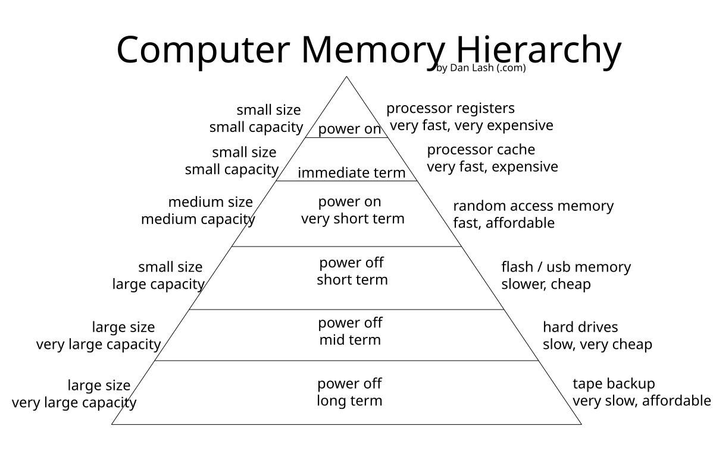

Affine Dialect 변환 심화
스케줄을 바꾸면 병렬성이 생긴다 — 지역성·스큐잉·하드웨어 매핑.
앞 섹션에서 폴리헤드럴 모델이 루프를 다면체(polyhedron) — 부등식으로 둘러싸인 다차원 공간 — 로 보고, 실행 순서를 행렬(스케줄, schedule)로 바꾼다는 큰 그림을 봤다. 이번 섹션은 그 이론이 MLIR의 Affine dialect 위에서 실제로 어떻게 동작하는지를, 대표적인 변환들과 애니메이션으로 따라간다.
용어 빠른 정의: dialect = MLIR에서 한 추상화 수준의 연산(op) 묶음(하드웨어로 치면 하나의 ISA 레이어). Affine dialect = 루프 경계·배열 인덱스가 모두 아핀식(변수의 1차식 + 상수)으로 제한된 dialect로, 폴리헤드럴 분석을 IR 문법 차원에서 강제한다. lowering = 높은 추상화의 op를 더 낮은 op로 점진적으로 내려보내는 것.
1. Affine 문법 60초 요약
Affine dialect는 다섯 개의 연산만 알면 거의 다 읽힌다.
affine.for %i = 0 to %N { ... } // 경계가 아핀식인 카운트 루프 affine.if affine_set<(d0) : (d0 - 1 >= 0)> { ... } // 조건이 정수집합(integer_set)인 분기 %v = affine.load %A[%i, %j] : memref<NxMxf32> // 아핀 인덱스로 메모리 읽기 affine.store %v, %A[%i, %j] : memref<NxMxf32> // 〃 쓰기 %t = affine.apply affine_map<(d0,d1)->(d0+d1)>(%i,%j) // 인덱스를 아핀식으로 다시 계산 affine.parallel (%i,%j) = (0,0) to (%N,%M) { ... } // 반복끼리 의존성 없음을 *선언*
한 줄 해설: affine.for는 보통의 for 루프, affine.if의 조건은 부등식 집합(integer_set)으로만 쓸 수 있고, affine.load/store는 memref(메모리 버퍼 타입)에 아핀 인덱스로만 접근하며, affine.apply는 좌표 변환을 계산하고, affine.parallel은 "이 반복들은 동시에 돌려도 안전하다"는 합법성 보증을 IR에 박아 넣는다. 폴리헤드럴 모델의 세 기둥(반복공간 $D$, 의존성, 스케줄 $\Theta$)이 각각 affine.for의 경계 / 의존성 분석 / affine.apply·루프 순서로 대응된다 [1].
핵심은 이 문법 제약 자체가 분석을 가능하게 한다는 점이다. 인덱스를 임의의 함수로 못 쓰게 막았기 때문에, 컴파일러는 "이 두 접근이 같은 칸을 건드리나?"를 정수 부등식으로 정확히(exact) 풀 수 있다. 보수적으로 "혹시 겹칠지 모르니 포기"하는 일반 컴파일러와 갈리는 지점이다.
2. Affine pass ↔ 폴리헤드럴 변환 대응표
MLIR에서 각 폴리헤드럴 변환은 하나의 pass(IR을 받아 변형하는 단위)로 제공된다 [1][8].
| Affine pass | 폴리헤드럴 변환 | 한 줄 효과 |
|---|---|---|
affine-loop-tile | Tiling | strip-mining으로 다면체 분할 → 워킹셋을 캐시에 가둠 |
affine-loop-fusion | Fusion | 두 다면체를 하나로 → producer-consumer 지역성↑ |
affine-parallelize | (병렬 스케줄) | 의존성 없는 루프를 affine.parallel로 승격 |
affine-super-vectorize | (SIMD) | 병렬 루프를 벡터 op로 묶음 |
affine-loop-coalescing | (1D 평탄화) | N-D nest → 1-D, GPU 1-D thread index 친화 |
| (Interchange) | Interchange | 스케줄 행렬의 행 교환 → stride/지역성 개선 |
LLVM upstream에는 in-tree affine pass가 15종 가까이 있다(affine-loop-normalize·-tile·-fusion·-coalescing·-unroll·-unroll-jam·affine-parallelize·affine-super-vectorize·affine-scalrep·affine-data-copy-generate·affine-pipeline-data-transfer·affine-expand-index-ops·lower-affine 등) [8]. 단, Interchange는 예외다 — LLVM에는 standalone affine-loop-interchange pass가 없어, in-tree 유틸리티 permuteLoops(와 테스트 pass -test-loop-permutation)가 그 역할을 한다 [8]. 이제 표의 변환들을 애니메이션과 함께 본다.
3. 루프 순서 교환 (Interchange)
원리: 스케줄 행렬을 치환행렬(permutation matrix)로 곱하면 루프 중첩 순서가 바뀐다. 안쪽 루프가 메모리를 한 칸씩(stride 1, 인접 주소를 차례로) 훑도록 순서를 고르면 캐시 히트가 급증한다.
행 우선 배열을 열 방향으로 훑던 루프를 뒤집어 행 방향으로 훑게 만드는 고전적 변환으로, 변환 자체는 스케줄 행렬의 행 두 개를 맞바꾸는 것에 불과하다 [1]. (MLIR 측에서는 별도 pass 대신 permuteLoops 유틸리티가 이 행 교환을 수행한다 [8].)
4. 타일링 (Tiling)

원리: 큰 루프를 strip-mine(작은 블록으로 쪼개기) + interchange의 조합으로 타일 단위로 재배열한다. 타일 하나의 워킹셋이 캐시/SRAM 안에 들어가면 DRAM 왕복이 줄어든다.
affine-loop-tile의 핵심 한 가지: 옵션 separate=true를 주면 컴파일러가 타일 경계를 affine.if로 분리해 full tile(딱 떨어지는 타일)과 partial tile(자투리)을 코드 레벨에서 갈라낸다. 이것은 폴리헤드럴에서 말하는 iteration domain peeling(반복공간을 조각내 자투리를 떼어내는 것)을 MLIR이 first-class 문법(affine.if + integer_set)으로 표현한 것이다 [8]. full 경로는 경계가 상수가 되므로 뒤이은 unroll·vectorize의 최적화 진입로가 된다. 즉 "자투리 처리"라는 실무적 골칫거리가, 이론의 peeling과 그대로 맞아떨어진다.
5. 융합 (Fusion)
원리: 한 루프가 만든 배열을 다음 루프가 곧장 소비할 때, 두 반복영역을 하나로 합치면 중간 버퍼가 사라지고(producer 결과를 바로 consumer가 씀) 지역성이 올라간다.
affine-loop-fusion 다음에 affine-scalrep(스칼라 승격)을 이어 붙이면, 3단계 체인의 중간 배열이 레지스터로 승격되며 완전히 사라진다 — 폴리헤드럴의 array contraction(배열 축약) 자동화에 해당한다 [8]. 이 점이 고수준 dialect와 닿는 지점인데, 뒤의 의견 박스에서 다시 다룬다.
6. ★ 스큐잉 — 없던 병렬성을 만들어내기
이번 섹션의 하이라이트다. 의존성 벡터가 (1,0)과 (0,1) 두 개 걸린 2D 스텐실은, i 루프도 j 루프도 그대로는 병렬화할 수 없다 — 어느 방향으로 펼쳐도 옆 칸 결과를 기다려야 하기 때문이다.
폴리헤드럴의 답은 스케줄 행렬을 바꾸는 것 하나뿐이다. 스큐(skew) 스케줄
$$\theta(i,j) = (i+j,\; j), \qquad \theta = \begin{bmatrix}1&1\\0&1\end{bmatrix}$$
직관 해설: 새 시간축 $t = i+j$(반대각선)를 도입하면, 두 의존성 $(1,0)$·$(0,1)$이 모두 $\Delta t \ge 1$로 바뀐다(각각 $\Delta t = 1+0 = 1$, $0+1 = 1$). 즉 모든 의존성이 시간상 앞으로만 향하게 밀려난다. 그러면 같은 $t$ 값을 가진 점들(한 wavefront, 원래의 반대각선)끼리는 의존성이 전혀 없으므로 동시에 실행할 수 있다. 행렬식이 1인 unimodular 변환이라 반복 점은 하나도 손실되지 않는다 [1][8].
before / after MLIR (2D 스텐실 예제):
// Before — 두 루프 모두 loop-carried 의존성, 병렬 불가 affine.for %i = 1 to 7 { affine.for %j = 1 to 7 { %n = affine.load %A[%i - 1, %j] : memref<8x8xf32> // dep (1,0) %w = affine.load %A[%i, %j - 1] : memref<8x8xf32> // dep (0,1) %s = arith.addf %n, %w : f32 %h = arith.mulf %s, %c : f32 affine.store %h, %A[%i, %j] : memref<8x8xf32> } }
// After — θ(i,j)=(i+j, j) ; i = t - j. 바깥은 시간(순차), 안쪽은 병렬 affine.for %t = 2 to 13 { affine.parallel (%j) = (max(1, %t - 6)) to (min(7, %t)) { %i = affine.apply affine_map<(t, j) -> (t - j)>(%t, %j) %n = affine.load %A[%i - 1, %j] : memref<8x8xf32> %w = affine.load %A[%i, %j - 1] : memref<8x8xf32> %s = arith.addf %n, %w : f32 %h = arith.mulf %s, %c : f32 affine.store %h, %A[%i, %j] : memref<8x8xf32> } }
한 줄 해설: 바깥 affine.for %t는 wavefront를 순서대로(시간) 훑고, 안쪽 affine.parallel (%j)는 max/min 아핀 경계로 그 wavefront의 폭만큼 펼쳐진다. %i = affine.apply (t - j)로 원래 인덱스를 복원한다. 의존성은 하나도 깨지 않고 순서만 바꿔 병렬성을 합성한 것이 스큐잉의 핵심이다 [1]. 이 $6\times6$ 예제(반복점 36개, $t=2..12$로 wavefront 11개)에서 코어 6개 기준 36개 순차 스텝이 11개 wavefront로 줄어 약 $3.3\times$ 속도가 된다(최대 wavefront 폭이 6이라 코어 6개에 딱 맞음) [8].
7. SIMD 벡터화
원리: 병렬화된 안쪽 루프의 연속 반복들을 벡터 폭 VL만큼 한 묶음으로 만든다. 벡터 op 한 번 = VL개 반복을 한 번에 처리.
MLIR affine-super-vectorize는 target-independent한 n-D 가상 벡터(virtual vector, 예: vector<4x4xf32>)로 표현해 두고, 실제 하드웨어 벡터폭은 나중 lowering에서 결정한다 [8].
8. 메모리 정렬 (Paging)
원리: 타일을 페이지 경계에 정렬하면 한 타일을 도는 동안 page fault와 TLB(주소 변환 캐시) miss가 줄어든다(가상메모리 관점의 타일링).
9. 멀티코어 분배 (Multicore)
원리: 바깥 병렬 루프(또는 타일들)를 P개 코어에 block 또는 cyclic으로 나눠 주면, 전체 완료 시간(makespan)이 줄고 speedup이 난다.
10. 소프트웨어 파이프라이닝 (Pipelining)
원리: 연속한 반복들의 단계(stage)를 II(initiation interval) 간격으로 겹쳐 발사한다 — 한 반복의 연산이 끝나기 전에 다음 반복을 시작시켜 파이프라인을 채운다(prologue → steady state → epilogue).
affine-pipeline-data-transfer는 DMA 데이터 전송과 계산을 자동으로 겹쳐주는데, 그 핵심이 affine.apply (d0)->(d0-1) — 즉 스케줄을 -1만큼 시프트하는 한 줄과 double buffer로 표현된다. minimum modulo scheduling의 MLIR 표현인 셈이다 [8].
11. MLIR pass의 잘 드러나지 않는 두 성질
이 섹션의 변환들에는, 직접 들여다보지 않으면 놓치기 쉬운 두 가지 깊은 성질이 있다.
첫째, 진입점 불변성(4중 byte-identical). 같은 unroll 변환을 (1) wrapper pass, (2) in-tree CLI(mlir-opt --affine-loop-unroll), (3) pipeline string, (4) C++ PassManager에 직접 addPass하는 네 경로 중 어느 것으로 호출해도 결과 IR이 바이트 단위로 동일하다 [8]. 호출 경로가 무엇이든 변환 의미가 불변(invariance)이라는 직접적 증거다 — 즉 MLIR pass는 진입점이 아니라 IR 변환 그 자체로 정의된다. (네 경로 모두 결국 같은 loopUnrollByFactor 함수를 호출하기 때문이다.)
둘째, lower-affine의 Euclidean correction. affine 영역을 떠날 때(--lower-affine) affine의 mod는 arith dialect의 순진한 나머지로 1:1 번역되지 않는다. affine mod는 음수에서도 항상 비음수 결과를 보장하는 Euclidean 의미라서, lowering이 remsi(부호 있는 나머지) + cmpi(음수 검사) + addi + select의 보정 시퀀스로 풀어낸다 [8]. 같은 mod라도 dialect마다 의미가 미묘하게 다르다는 것을, 내려보내기 코드가 드러내 준다.
12. 어디까지 내려갈 것인가
마지막으로 실무 판단 하나. 변환을 affine까지 내려서 할지, 더 높은 linalg dialect에 머물지의 트레이드오프다.
고수준 linalg에 머물면 matmul·conv 같은 연산의 의미가 보존돼 fusion이 싸고 직관적이다. 반면 affine까지 내려가면 skewing·interchange·peeling 같은 극한 루프 변형이 가능해지지만, 한 번 내려가면 고수준 의미를 되살리기 어렵다. 따라서 어느 레벨에 머물지는 타깃이 정한다 — 범용 가속기(GPU 등)는 의미를 오래 보존하는 linalg 중심이, 루프를 하드웨어 opcode 크기에 맞춰 극한으로 변형해야 하는 커스텀 가속기는 affine까지 내려가는 편이 유리하다.
참고문헌
[1] Lattner et al., "MLIR: A Compiler Infrastructure for the End of Moore's Law", arXiv:2002.11054, 2020.
[8] MLIR official documentation — https://mlir.llvm.org/docs/ .